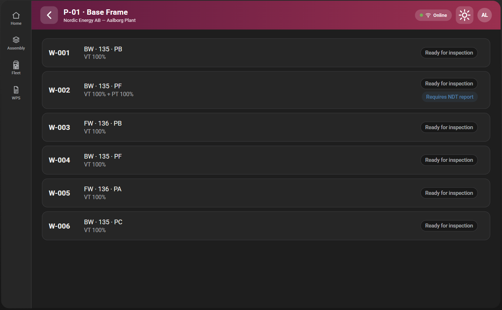
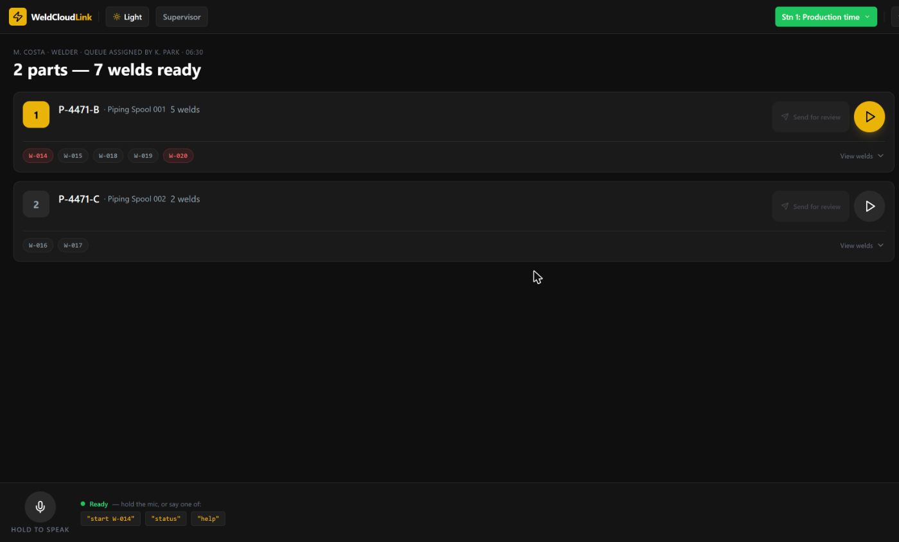
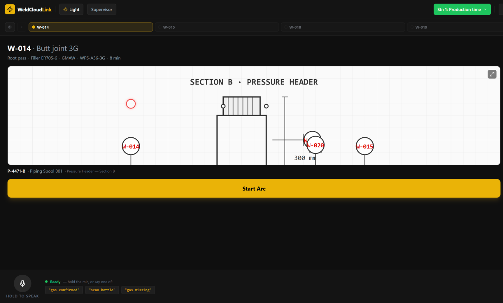
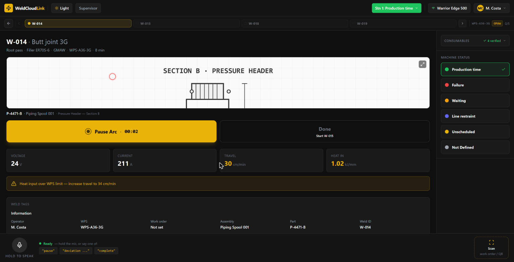
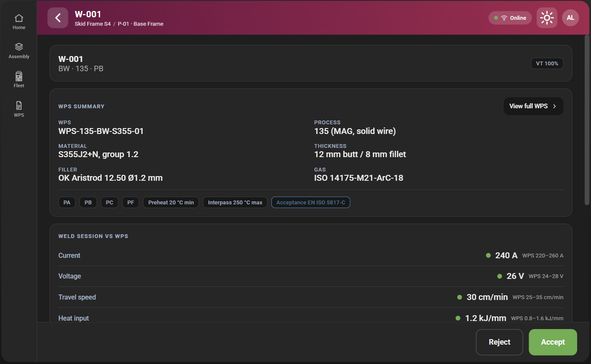
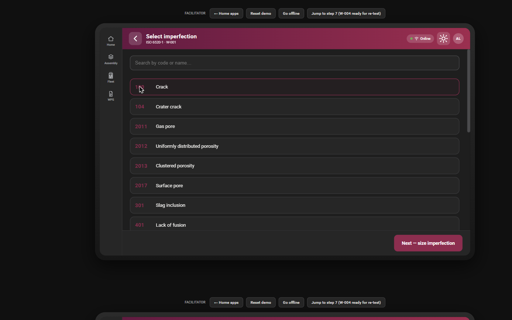
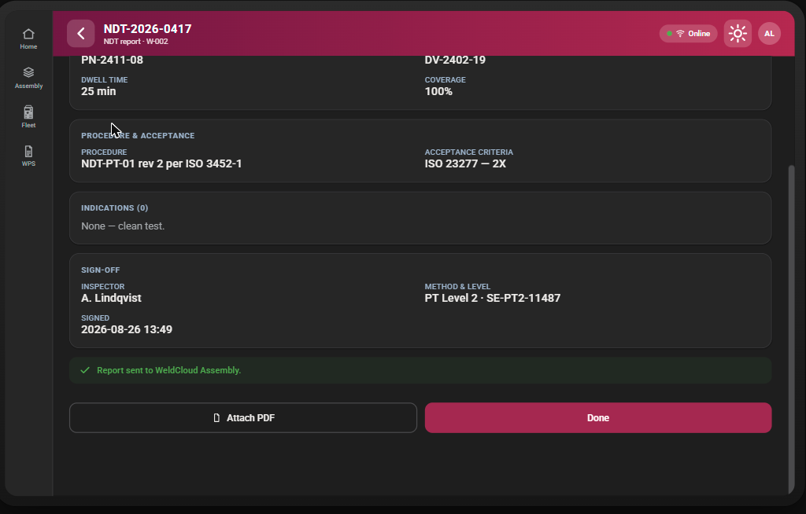
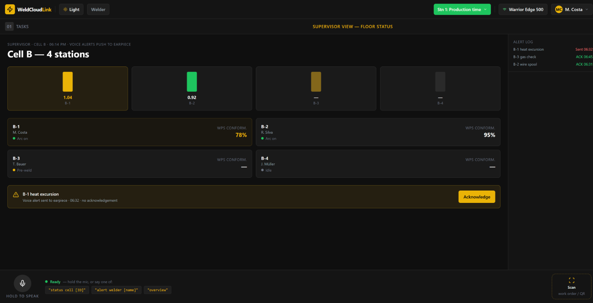

WeldCloud Assembly

Welder app



Inspector app



Reject loops back to the Welder app
An NCR is raised, the weld's status flips to Not acceptable / Repair — re-test, and it returns to the Welder app's queue for the Setup step. In this demo the loop isn't literally wired between the two apps — the Inspector app just simulates it against its own mock data.
Accept / signed NDT reports back to Assembly
Acceptable verdicts and signed NDT reports are "shared to Assembly" from the Inspector app, closing the loop that started when Assembly created the weld and assigned the welder and inspector.
Supervisor view — floor-wide oversight
A heatmap of every station, live within the same Welder app instance (it's a view mode, not a separate file) — so it reflects Welder app activity in real time, but has no visibility into the separate Inspector app's mock data in this demo.
